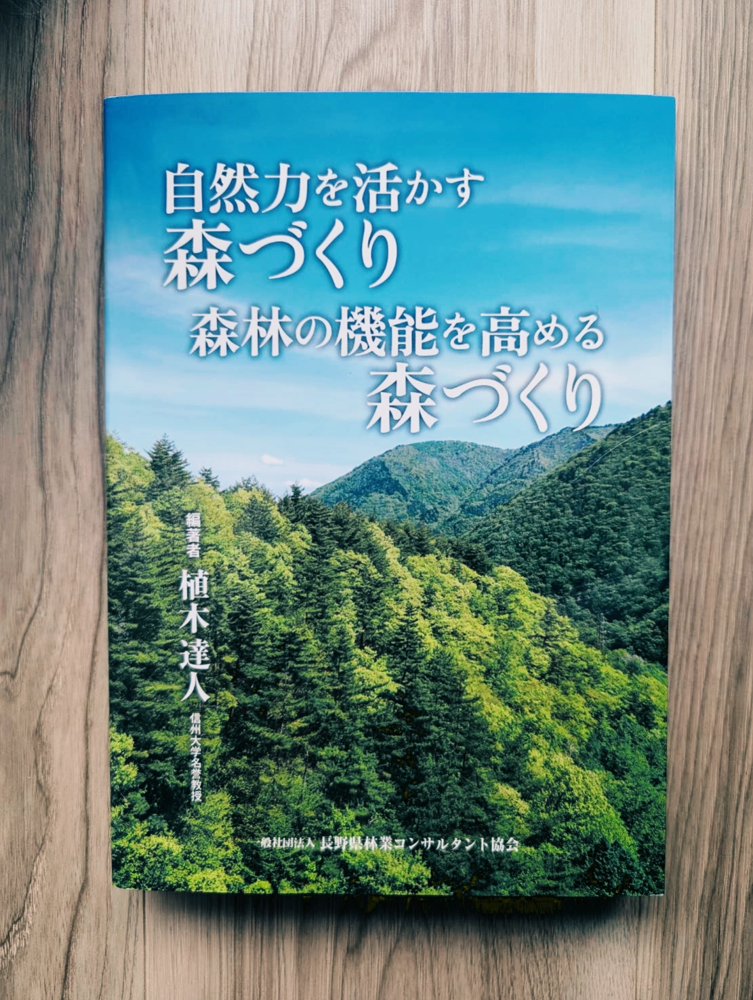

Forgotten Tales & Enigmas
It has long been an axiom of mine that the little things are infinitely the most important.
— Sherlock Holmes
Forgotten Tales & Enigmas は、物語を読み解き、自ら真実へたどり着く喜びを届けるミステリーレーベルです。 世界各地の調査型ミステリーゲームや物語体験作品をお届けします。